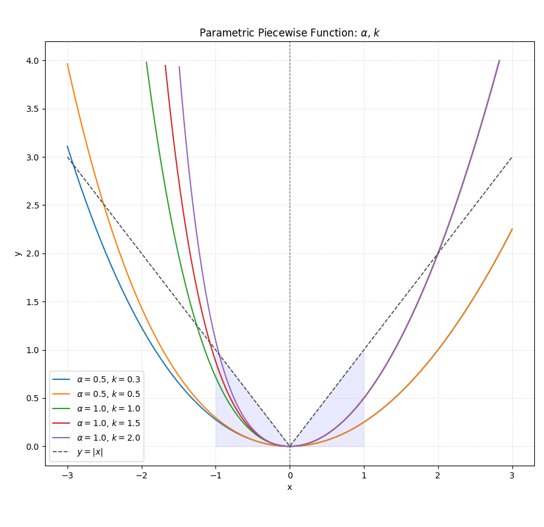
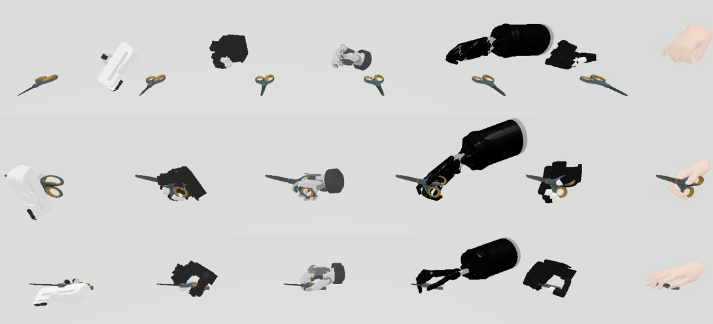
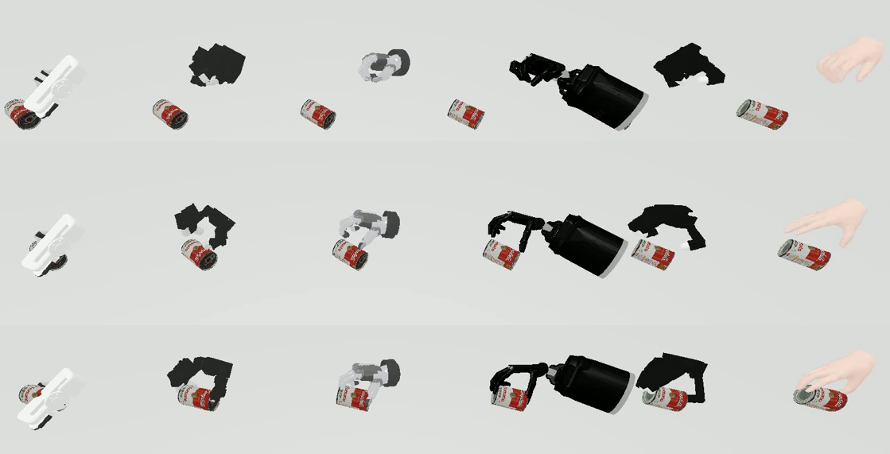

UniHM: Unified Dexterous Hand Manipulation with Vision Language Model
基于论文正文、实验、附录与原始图注整理的中文精读报告
1. 论文速览
一句话贡献：提出语言引导的统一灵巧手操作框架，用共享 tokenizer 和物理引导细化生成可执行手部操作序列。
1.1 核心内容
UniHM 试图用一个统一框架处理开放词汇语言指令下的多类灵巧手操作。
它将 RGB-D 场景理解、语言目标、点云/手物表示与动作生成连接起来，并通过物理或几何细化得到可执行序列。
与端到端 VLA 相比，它更强调结构化手部操作表示和跨 embodiment 执行。
1.2 关键词
UniHM; language-guided dexterous manipulation; tokenizer; VLM; physical refinement; hand manipulation
2. 研究问题与动机
2.1 论文试图解决的问题
灵巧操作任务类型多样，单一任务专用模型难以复用；
纯语言视觉模型又缺少对手物几何与接触的理解。
UniHM 希望在统一表示中支持不同语言目标和操作序列，并将生成结果适配到不同手型或真实系统，从而减少每个任务单独训练的成本。
4. 方法详解
4.1 方法流程与核心设计
从原始 overview 与 pipeline 图看，系统接收开放词汇指令和 RGB-D/点云场景，生成与目标物体和任务匹配的手部运动。
统一 tokenizer 或动作表示负责压缩多样手部序列；
生成模块建模语言、场景和动作条件；
后续 point-cloud/物理细化修正穿透、接触和可执行性，并通过 cross-embodiment 映射用于不同手型。
4.2 方法相关原图逐图解读

结合本文的读图结论：这张图属于论文的结果证据，应重点比较图注明确列出的任务、基线或指标：black The function plots under varying values of \alpha and k are displayed. Note that \alpha and k control the curve behavior for x > 0 and x < 0, respectively. For comparison, the curve of y = |x| is plotted using a dashed line.

结合本文的读图结论：这张图属于论文的结果证据，应重点比较图注明确列出的任务、基线或指标：black Optimization results when the point cloud includes noise. Here, the black points represent the object point cloud, and the red/green points denote the positions of the dexterous hand's fingertips. (A) Optimization using the f(d) kernel, visualized on the noisy input. (B) Optimization using the Euclidean distance, visualized on the noisy input. (C) The f(d) kernel optimization result projected onto the clean noise-free point cloud. (D) The Euclidean distance optimization result projected onto the noise-free point cloud.

结合本文的读图结论：这张图属于论文的结果证据，应重点比较图注明确列出的任务、基线或指标：The visualization results of our grasping sequence in Sapien. More real world examples could be found in the video.

结合本文的读图结论：这张图属于论文的结果证据，应重点比较图注明确列出的任务、基线或指标：The visualization results of our grasping sequence in Sapien. More real world examples could be found in the video.

结合本文的读图结论：这张图展示真实系统或硬件部署，是判断论文是否跨越仿真到真实差距的重要证据：black Real-World Cross-embodiment Set up

结合本文的读图结论：这张图给出了论文方法的信息流与模块关系；关键是沿图中箭头追踪输入如何变成最终输出：Overview. We introduce UniHM, the first unified hand-manipulation framework conditioned on free-form language. UniHM is trained solely on closed-set HOI datasets to follow target trajectories and execute physically feasible interactions, and generalizes to open-world tasks in real-world interactions.
5. 实验与结果
5.1 实验设置、主要结果与消融结论
实验包含 Sapien 中的抓取序列可视化、真实世界结果、cross-embodiment 设置、点云噪声影响与 pipeline 展示。
评估应重点检查语言任务覆盖、生成动作的物理可行性、噪声鲁棒性和真实执行成功率。
原始图中 real-world 与 cross-embodiment 证据比辅助函数曲线更值得关注。
5.2 实验相关原图逐图解读

结合本文的读图结论：这张图给出了论文方法的信息流与模块关系；关键是沿图中箭头追踪输入如何变成最终输出：Pipeline. UniHM converts open-vocabulary instructions and RGB-D inputs into executable dexterous-hand trajectories via three stages: (1) morphology-agnostic motion tokenization; (2) language-guided generation that fuses text, perception, and token history to produce manipulation token sequences; and (3) physics-aware decoding with smoothness/contact priors for feasible, stable execution.

结合本文的读图结论：这张图属于论文的结果证据，应重点比较图注明确列出的任务、基线或指标：Real-World Results. UniHM achieves higher success rates than prior methods on both seen and unseen objects, producing physically consistent and executable real-world manipulations.
6. 复现要点
6.1 推荐复现路径与主要阻碍
需要 RGB-D/点云处理、语言模型或文本编码器、手部动作 tokenizer、生成模型、物理/几何优化和目标手型映射。
先在 Sapien 复现可视化与穿透/接触指标，再尝试真实系统。
工程质量一般意味着依赖版本、数据路径、模型权重与评估脚本可能需要较多手工修补。
7. 分析、局限与边界
7.1 证据支持的结论与适用边界
结构化生成与物理细化有助于可执行性，但优化后的动作质量依赖点云完整度、物体几何和接触模型。
开放词汇指令能否覆盖真正复杂的长程任务仍需验证。
cross-embodiment 映射也可能无法保留不同手型的精细接触能力。
8. 组会问答与阅读笔记
Q1：UniHM 的“统一”体现在哪里？
：统一语言条件、场景表示和手部操作生成/细化流程。
Q2：为何需要物理细化？
：生成模型可能产生穿透或不可执行动作。
Q3：最关键图是什么？
：overview/pipeline、真实执行和 cross-embodiment 结果。
Q4：点云噪声为何重要？
：真实 RGB-D 不完整，几何误差会直接影响手物接触。
Q5：最大复现风险？
：依赖与评估脚本不完善，以及真实手型映射。
我的阅读笔记
研究价值高于工程成熟度。
适合拆出 tokenizer、point-cloud conditioning 或 physical refinement 做方法研究；
若目标是快速跑通真实系统，优先级应低于 DexGraspVLA。